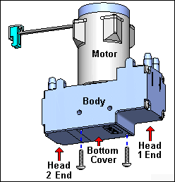
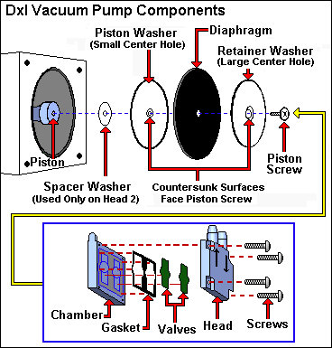

This procedure describes how to repair the vacuum pump using the repair kit.
Refer to How to Rebuild DxI vacuum Pump in Box to supplement this procedure:
Box\Service Documentation - Dx\Immunoassay\DxI\Videos
Caution: Only the videos with the current version of the chapter as seen in the title can be used as a supplement material to the field service manual.
Required Materials:
Vacuum Pump Repair Kit—one kit contains parts to rebuild one pump (two heads)
Piston screw (2)
Diaphragm (2)
Retainer washer, 0.750-inch diameter with large center hole (2)
Piston washer, 0.750-inch diameter with small center hole (2)
Spacer washer (for Head 2 side on vacuum pumps only) (1)
Gasket (2)
Valve, bow-tie shaped (4)
Note: The bearing is not replaceable. If the bearing is bad, the pump cannot be repaired.
Reference Graphics:

Note: Head 1 end is offset upwards compared to the Head 2 end.

Caution: Do not repair a Hargraves air compressor pump or an Access vacuum pump using the instructions for the DxI vacuum pump repair kit. The internal components of the pumps are different.
If the
Peristaltic and Vacuum Pumps Diagnostics screen is active, then stop and exit the screen before proceeding.
Open the right front main cover.
Toggle the upper switch to off, on the power distribution module.
Open the SPU.
Open the upper left cover of the instrument.
Loosen the locking screw.
The locking screw prevents the SPU from swinging outward from the instrument. It is not necessary to remove the screw because the SPU plate is slotted.
Remove the 3/16-in hex bolt located near the right end of the SPU cover.
Open the lower right access panel on the front of the instrument.
Pull the spring-loaded captive pin that holds the panel (located under the SPU) to the frame.
Grasping the SPU near the right end, swing the right end away from the instrument.
Warning: The SPU off-load area slides forward and rearward as the SPU is swung in and out. To prevent damage to the SPU or the off-load area, confirm that nothing obstructs the movement of the off-load area as the SPU is moved.
(For China and Canada Only.) On the front facing the edge of the Framus assembly, install the Chinese and French labels adjacent to the existing English label.
Note: The labels are in the DxI Installation Kit.
Remove the vacuum pump from the fluidics drawer.
Warning: Service personnel are in contact with potentially infectious materials during this procedure. Handle and dispose of biohazard materials according to proper laboratory procedure. Proper hand, eye, and facial protection is required.
Remove the cover panel that hangs under the SPU, and then pull out the fluidics drawer.
Remove the large metal protective cover over the peri pump module and remove the black protective shield over the top of the vacuum sensor interface PCB.
Disconnect the large cable at the front edge of the vacuum sensor interface PCB.
Caution: Disconnecting the large cable at the front edge of the vacuum sensor interface PCB is required to remove the +12 V and -12 V power to the PCB, which is NOT removed by the toggle switch.
Be prepared with paper towels to catch waste fluid spillage, and then mark and disconnect all the tubes from the pump to be repaired.
Note: Tubes that are marked with their pump positions facilitate the reinstallation process.
Remove the two 7/64-in hex screws that secure the pump and dampener bracket, and then disconnect the motor cable and remove the pump.
Note: A long-reach 7/64-in ball-end driver makes this step much easier.
Service Pump Head 1.
Warning: Service personnel are in contact with potentially infectious materials during this procedure. Handle and dispose of biohazard materials according to proper laboratory procedure. Proper hand, eye, and facial protection is required.
Remove the square cover plate from the bottom of the pump body (two Phillips screws).
Note: Removing the cover plate exposes the bearing for inspection and allows manual rotation of the shaft (required in subsequent steps).
Inspect the pump for fluid leakage into the pump body and damage to the bearing. Rotate the motor shaft several times in each direction to assess the bearing function.
Holding paper towels to catch waste fluids, remove the four Philips screws from the Head 1 end, and then pull the head and chamber off the pump body.
Note: The Head 1 end is offset upwards compared to the Head 2 end.
Remove and discard the gasket and valves from between the head and chamber.
Remove and discard the piston screw, the diaphragm, and all the washers.
Clean the head and chamber with water, and then dry them with lint free paper towels. Alcohol may also be used.
Assemble the diaphragm with the washers oriented as shown (excluding the spacer washer on the Head 1 end), and then secure them to the piston with the screw (refer to Reference Drawing 2).
Caution: To avoid cross-threading, first rotate the screw counterclockwise until it bumps down and then tighten the screw clockwise.
Note: Only the Head 2 end uses the spacer washer.
Rotate the shaft until the diaphragm has level contact to the rim of the pump body (not pulled in and not sticking out). Center the diaphragm to the rim, and then place the chamber on the pump body with the chamber tabs oriented upward.
Note: The diaphragm can become pinched if it is not centered with the rim.
Place a new gasket and two new valves on the chamber. Press the head onto the chamber, and secure the head with the four Phillips screws.
Caution: To avoid cross-threading, first rotate the screw counterclockwise until it bumps down and then tighten the screw clockwise.
Rotate the shaft to verify that the diaphragm is not pinched between the head and chamber.
If the diaphragm is pinched, you feel stiff resistance to rotation. To correct the pinched diaphragm, reassemble and retest as required.
Service Pump Head 2.
Warning: Service personnel are in contact with potentially infectious materials during this procedure. Handle and dispose of biohazard materials according to proper laboratory procedure. Proper hand, eye, and facial protection is required.
Holding paper towels to catch waste fluids, remove the four Philips screws from the Head 2 end, and then pull the head and chamber off the pump body.
Note: The Head 2 end is offset downwards compared to the Head 1 end.
Remove and discard the gasket and valves from between the chamber and head.
Remove and discard the piston screw, the diaphragm, and all the washers.
Caution: Confirm that the spacer washer is also removed from the piston.
Clean the head and chamber with water, and then dry them with lint-free paper towels. Alcohol may also be used.
Assemble the diaphragm with the washers oriented as shown (including the spacer washer on the Head 2 end), and then secure them to the piston with the screw.
Caution: To avoid cross-threading, first rotate the screw counterclockwise until it bumps down and then tighten the screw clockwise.
Rotate the shaft until the diaphragm has level contact to the rim of the pump body (not pulled in and not sticking out). Center the diaphragm to the rim, and then place the chamber on the pump body with the chamber tabs oriented upward.
Note: The diaphragm can become pinched if it is not centered with the rim.
Place a new gasket and two new valves on the chamber. Press the head onto the chamber, and secure the head with the four Phillips screws.
Caution: To avoid cross-threading, first rotate the screw counterclockwise until it bumps down and then tighten the screw clockwise.
Rotate the shaft to verify that the diaphragm is not pinched between the head and chamber.
If the diaphragm is pinched, you feel stiff resistance to rotation. To correct the pinched diaphragm, reassemble and retest as required.
Install the bottom cover plate on the pump body and secure it with the two Phillips screws.
Install the serviced vacuum pump.
Secure the pump and dampener bracket with the two hex-screws.
Note:
Engaging the screws to mount the vacuum pumps on a DxI 800 instrument can be difficult because of tight clearances.
To access the screws for the center pump on a DxI 800 instrument, it might be necessary to remove the front pump temporarily. Access to the rear pump can be improved by opening the SPU.
If it is desired to test the pump before installing the screws, proceed to the next step without securing the pump and dampener bracket.
Reconnect all tubing, and connect the vacuum pump motor to the vac/peri-pump interface PCB.
Reconnect the large cable to the vacuum sensor interface PCB.
Toggle the upper switch to on, on the power distribution module.
Verify the proper operation of the vacuum pump.
Initialize the instrument with the main covers open and observe the wash tower for indications of a vacuum problem (fluid overflow).
Note: The cover interlock switches must be bypassed to initialize the instrument with the covers open.
Navigate to the
Peristaltic and Vacuum Pumps Diagnostics screen, activate the vacuum pump, and verify that it is running.
With the vacuum pump still running, activate the peri-pump. Verify that fluid is drawn down through the wash tower and pump head correctly (or is providing vacuum to the duck-bill valve).
Caution: If the tubing is routed incorrectly or kinked under the dampeners, wash towers can overflow quickly.
Deactivate the peri-pump to halt fluid injection, and then verify that both vacuum heads can achieve -315 mm Hg with the intake blocked.
If the vacuum pump is not secured with screws, then secure the vacuum pump.
Exit the
Peristaltic and Vacuum Pumps Diagnostics screen.
Toggle off the upper switch on the power distribution module.
Repeat the steps:
Install the serviced vacuum pump.
Verify the proper operation of the vacuum pump.
Reinstall the large metal protective cover over the peri pump module and the black protective shield over the top of the vacuum sensor interface PCB.
Reinstall the cover panel that hangs under the SPU.
Close the SPU.
The SPU is hinged on the left side. The right side is released and can be swung out from the instrument to approximately 45 degrees.
Warning: The SPU off-load area slides forward and rearward as the SPU is swung in and out. To prevent damage to the SPU or the off-load area, confirm that nothing obstructs the movement of the off-load area as the SPU is moved.
Grasping the SPU near the right end, swing the right end toward the instrument.
Pull the spring-loaded captive pin to attach the panel (located under the SPU) to the frame.
Close the lower right access panel on the front of the instrument.
Insert the 3/16-in hex bolt.
Tighten the bolt that holds the SPU from swinging outward from the instrument (locking screw).
Close the upper left cover of the instrument.
Note: Initialize the instrument after opening and closing the SPU, because a switch is actuated when the SPU is opened.
Remove all cover interlock bypasses, and then close all covers.
Initialize the system.
Verify system operation.
Perform system verification as stated in the Verification of Service Repair document .